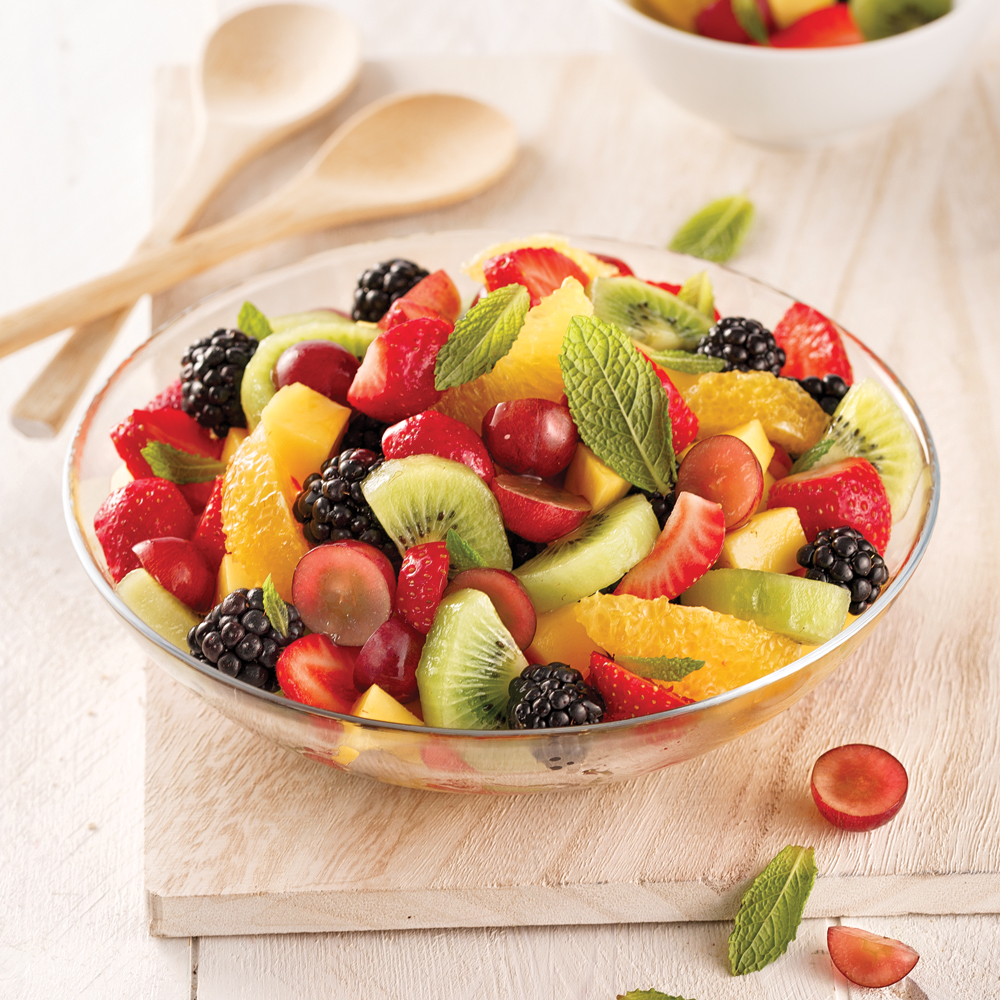

Salade de fruits
 <
Une salade de fruit de saison dans une coupe en verre avec des feuilles de menthe
Mélange de fruits rouges, d'agrumes et de fruits exotiques, assaisonné d'un sirop parfumé à la menthe.
- 1 l d'eau
- 20 g de basilique frais
- 100 g de fraise
- 100 g d'orange
- 70 g de kiwi
- 100 g de raisin
- 50 g de pomme
- 150 g de sucre
- Faire bouillir l'eau avec le sucre la veille
- Couper les fruits et les mettre dans le sirop froid
- Ajouter les feuilles de basilique et laisser reposer 2-3 heures au frigidaire
Revenir